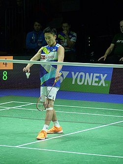
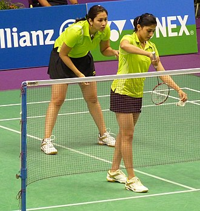

.jpg)
Badminton is a racquet sport played using racquets to hit a shuttlecock across a net. Although it may be played with larger teams, the most common forms of the game are "singles" (with one player per side) and "doubles" (with two players per side). Badminton is often played as a casual outdoor activity in a yard or on a beach; formal games are played on a rectangular indoor court. Points are scored by striking the shuttlecock with the racquet and landing it within the other team's half of the court.
Each side may only strike the shuttlecock once before it passes over the net. Play ends once the shuttlecock has struck the floor or ground, or if a fault has been called by the umpire, service judge, or (in their absence) the opposing side.[1]
The shuttlecock is a feathered or (in informal matches) plastic projectile that flies differently from the balls used in many other sports. In particular, the feathers create much higher drag, causing the shuttlecock to decelerate more rapidly. Shuttlecocks also have a high top speed compared to the balls in other racquet sports. The flight of the shuttlecock gives the sport its distinctive nature. The game developed in British India from the earlier game of battledore and shuttlecock. European play came to be dominated by Denmark but the game has become very popular in Asia, with recent competitions dominated by China. In 1992, badminton debuted as a Summer Olympic sport with four events: men's singles, women's singles, men's doubles, and women's doubles;[2] mixed doubles was added four years later. At high levels of play, the sport demands excellent fitness: players require aerobic stamina, agility, strength, speed, and precision. It is also a technical sport, requiring good motor coordination and the development of sophisticated racquet movements.[3]
History
Games employing shuttlecocks have been played for centuries across Eurasia,[a] but the modern game of badminton developed in the mid-19th century among the expatriate officers of British India as a variant of the earlier game of battledore and shuttlecock. ("Battledore" was an older term for "racquet".)[4] Its exact origin remains obscure. The name derives from the Duke of Beaufort's Badminton House in Gloucestershire,[5] but why or when remains unclear. As early as 1860, a London toy dealer named Isaac Spratt published a booklet entitled Badminton Battledore – A New Game, but no copy is known to have survived.[6] An 1863 article in The Cornhill Magazine describes badminton as "battledore and shuttlecock played with sides, across a string suspended some five feet from the ground".[7] The game originally developed in India among the British expatriates,[8] where it was very popular by the 1870s.[6] Ball badminton, a form of the game played with a wool ball instead of a shuttlecock, was being played in Thanjavur as early as the 1850s[9] and was at first played interchangeably with badminton by the British, the woollen ball being preferred in windy or wet weather.
Early on, the game was also known as Poona or Poonah after the garrison town of Poona,[8][10] where it was particularly popular and where the first rules for the game were drawn up in 1873.[6][7][b] By 1875, officers returning home had started a badminton club in Folkestone. Initially, the sport was played with sides ranging from 1 to 4 players, but it was quickly established that games between two or four competitors worked the best.[4] The shuttlecocks were coated with India rubber and, in outdoor play, sometimes weighted with lead.[4] Although the depth of the net was of no consequence, it was preferred that it should reach the ground.[4] The sport was played under the Pune rules until 1887, when J. H. E. Hart of the Bath Badminton Club drew up revised regulations.[5] In 1890, Hart and Bagnel Wild again revised the rules.[6] The Badminton Association of England (BAE) published these rules in 1893 and officially launched the sport at a house called "Dunbar"[c] in Portsmouth on 13 September.[12] The BAE started the first badminton competition, the All England Open Badminton Championships for gentlemen's doubles, ladies' doubles, and mixed doubles, in 1899.[5] Singles competitions were added in 1900 and an England–Ireland championship match appeared in 1904.[5]
England, Scotland, Wales, Canada, Denmark, France, Ireland, the Netherlands, and New Zealand were the founding members of the International Badminton Federation in 1934, now known as the Badminton World Federation. India joined as an affiliate in 1936. The BWF now governs international badminton. Although initiated in England, competitive men's badminton has traditionally been dominated in Europe by Denmark. Worldwide, Asian nations have become dominant in international competition. China, Denmark, Indonesia, Malaysia, India, South Korea, Taiwan (playing as 'Chinese Taipei') and Japan are the nations which have consistently produced world-class players in the past few decades, with China being the greatest force in men's and women's competition recently. Great Britain, where the rules of the modern game were codified, is not among the top powers in the sport, but has had significant Olympic and World success in doubles play, especially mixed doubles.
Rules
court
The court is rectangular and divided into halves by a net. Courts are usually marked for both singles and doubles play, although badminton rules permit a court to be marked for singles only.[13] The doubles court is wider than the singles court, but both are of the same length. The exception, which often causes confusion to newer players, is that the doubles court has a shorter serve-length dimension.
The full width of the court is 6.1 metres (20 feet), and in singles this width is reduced to 5.18 metres (17.0 feet). The full length of the court is 13.4 metres (44 feet). The service courts are marked by a centre line dividing the width of the court, by a short service line at a distance of 1.98 metres (6 feet 6 inches) from the net, and by the outer side and back boundaries. In doubles, the service court is also marked by a long service line, which is 0.76 metres (2 feet 6 inches) from the back boundary.
The net is 1.55 metres (5 feet 1 inch) high at the edges and 1.524 metres (5.00 feet) high in the centre. The net posts are placed over the doubles sidelines, even when singles is played. The minimum height for the ceiling above the court is not mentioned in the Laws of Badminton. Nonetheless, a badminton court will not be suitable if the ceiling is likely to be hit on a high serve.
serving
When the server serves, the shuttlecock must pass over the short service line on the opponents' court or it will count as a fault. The server and receiver must remain within their service courts, without touching the boundary lines, until the server strikes the shuttlecock. The other two players may stand wherever they wish, so long as they do not block the vision of the server or receiver. At the start of the rally, the server and receiver stand in diagonally opposite service courts (see court dimensions). The server hits the shuttlecock so that it would land in the receiver's service court. This is similar to tennis, except that in a badminton serve the whole shuttle must be below 1.15 metres from the surface of the court at the instant of being hit by the server's racket, the shuttlecock is not allowed to bounce and in badminton, the players stand inside their service courts, unlike tennis.
When the serving side loses a rally, the server immediately passes to their opponent(s) (this differs from the old system where sometimes the serve passes to the doubles partner for what is known as a "second serve"). In singles, the server stands in their right service court when their score is even, and in their left service court when their score is odd. In doubles, if the serving side wins a rally, the same player continues to serve, but he/she changes service courts so that she/he serves to a different opponent each time. If the opponents win the rally and their new score is even, the player in the right service court serves; if odd, the player in the left service court serves. The players' service courts are determined by their positions at the start of the previous rally, not by where they were standing at the end of the rally. A consequence of this system is that each time a side regains the service, the server will be the player who did not serve last time.
Scoring
Each game is played to 21 points, with players scoring a point whenever they win a rally regardless of whether they served[13] (this differs from the old system where players could only win a point on their serve and each game was played to 15 points). A match is the best of three games. If the score ties at 20–20, then the game continues until one side gains a two-point lead (such as 24–22), except when there is a tie at 29–29, in which the game goes to a golden point of 30. Whoever scores this point wins the game.
At the start of a match, the shuttlecock is cast and the side towards which the shuttlecock is pointing serves first. Alternatively, a coin may be tossed, with the winners choosing whether to serve or receive first, or choosing which end of the court to occupy first, and their opponents making the leftover the remaining choice. In subsequent games, the winners of the previous game serve first. Matches are best out of three: a player or pair must win two games (of 21 points each) to win the match. For the first rally of any doubles game, the serving pair may decide who serves and the receiving pair may decide who receives. The players change ends at the start of the second game; if the match reaches a third game, they change ends both at the start of the game and when the leading player's or pair's score reaches 11 points.
Strategy
To win in badminton, players need to employ a wide variety of strokes in the right situations. These range from powerful jumping smashes to delicate tumbling net returns. Often rallies finish with a smash, but setting up the smash requires subtler strokes. For example, a net shot can force the opponent to lift the shuttlecock, which gives an opportunity to smash. If the net shot is tight and tumbling, then the opponent's lift will not reach the back of the court, which makes the subsequent smash much harder to return.
Deception is also important. Expert players prepare for many different strokes that look identical and use slicing to deceive their opponents about the speed or direction of the stroke. If an opponent tries to anticipate the stroke, they may move in the wrong direction and may be unable to change their body momentum in time to reach the shuttlecock.
Singles
Since one person needs to cover the entire court, singles tactics are based on forcing the opponent to move as much as possible; this means that singles strokes are normally directed to the corners of the court. Players exploit the length of the court by combining lifts and clears with drop shots and net shots. Smashing tends to be less prominent in singles than in doubles because the smasher has no partner to follow up their effort and is thus vulnerable to a skillfully placed return. Moreover, frequent smashing can be exhausting in singles where the conservation of a player's energy is at a premium. However, players with strong smashes will sometimes use the shot to create openings, and players commonly smash weak returns to try to end rallies.
In singles, players will often start the rally with a forehand high serve or with a flick serve. Low serves are also used frequently, either forehand or backhand. Drive serves are rare. At high levels of play, singles demand extraordinary fitness. Singles is a game of patient positional manoeuvring, unlike the all-out aggression of doubles.[20]
Badminton can be played as a singles or doubles game with one or two players on a side. The object of the game is to hit the shuttlecock or “bird” back and forth with a racket across a net five feet high. This should be done with such skill and accuracy that the opponent is unable to return the shot successfully.
Scoring in women's singles is slightly different. 11 points wins a game and there is the option to set to 13 points at 10-10. Players change ends at the end of a game and when the leading score reaches 8 in a game of 15 points (or 6 in a game of 11 points) in the third game.
Doubles
Both pairs will try to gain and maintain the attack, smashing downwards when the opportunity arises. Whenever possible, a pair will adopt an ideal attacking formation with one player hitting down from the rear court, and their partner in the midcourt intercepting all smash returns except the lift. If the rear court attacker plays a drop shot, their partner will move into the forecourt to threaten the net reply. If a pair cannot hit downwards, they will use flat strokes in an attempt to gain the attack. If a pair is forced to lift or clear the shuttlecock, then they must defend: they will adopt a side-by-side position in the rear midcourt, to cover the full width of their court against the opponents' smashes. In doubles, players generally smash to the middle ground between two players in order to take advantage of confusion and clashes.
At high levels of play, the backhand serve has become popular to the extent that forehand serves have become fairly rare at a high level of play. The straight low serve is used most frequently, in an attempt to prevent the opponents gaining the attack immediately. Flick serves are used to prevent the opponent from anticipating the low serve and attacking it decisively.
At high levels of play, doubles rallies are extremely fast. Men's doubles are the most aggressive form of badminton, with a high proportion of powerful jump smashes and very quick reflex exchanges. Because of this, spectator interest is sometimes greater for men's doubles than for singles.
A match consists of the best of 3 games of 21 points. Every time there is a serve – there is a point scored. The side winning a rally adds a point to its score. At 20 all, the side which gains a 2 point lead first, wins that game. At 29 all, the side scoring the 30th point, wins that game.
Mixed doubles

In mixed doubles, both pairs typically try to maintain an attacking formation with the woman at the front and the man at the back. This is because the male players are usually substantially stronger, and can, therefore, produce smashes that are more powerful. As a result, mixed doubles require greater tactical awareness and subtler positional play. Clever opponents will try to reverse the ideal position, by forcing the woman towards the back or the man towards the front. In order to protect against this danger, mixed players must be careful and systematic in their shot selection.[21]
At high levels of play, the formations will generally be more flexible: the top women players are capable of playing powerfully from the back-court, and will happily do so if required. When the opportunity arises, however, the pair will switch back to the standard mixed attacking position, with the woman in front and men in the back.
home page